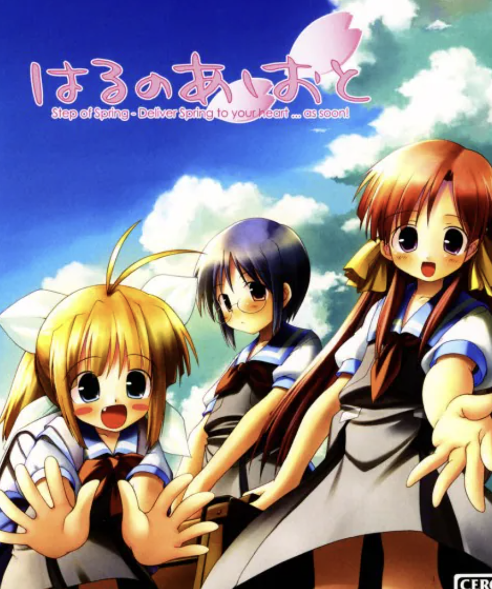

はるのあしおとは2004年7月23日にminoriより発売された18禁恋愛アドベンチャーゲームである。 OP映像を後に有名となる新海誠氏が監督したことやEDもアニメで入っているなど、映像面で力の入った作品となっている。
Harunoashioto
世代: Gen7.0
ジャンル: 学園もの
作品評価:
OP評価:
プレイ時間:30時間？(72話相当)
制作会社: minori
視聴開始日: 2024-6-8
視聴終了日: 2024-7-4
親作品(系統): 未分類
資格を持っていながらも、学生時代から住んでいた都会では教員になれず、その上失恋してしまった主人公・樹。彼がそんな自分の境遇、
そして煮え切らない自分自身に対して採った行動は、「故郷の街に帰る」という「逃避」とも言えるものでした。
自然豊かな田舎町・芽吹野町。
樹はその故郷でくすぶりつづけます。しかし、ほんの小さなきっかけから始まる新しい日々と、その時の中で出逢う、自分とは違った生き方をする人々。
今までの自分と、新しい自分。
それは希望に満ちた変化というよりも、新たな不安を沢山抱え込むことかもしれない。樹はまだ、そう考えます。そう。この時はまだ。
誰もがいつも心に持ち続ける、漠然とした不安や自分への焦り、そして前へ進む怖さ。
その渦の真っ只中にいる主人公と、彼を取り巻く人々、そしてそれらを包み込む自然という要素のみで、本作は静かに、けれどもしっかりと「人間」を描き出す。
オープニング映像及び音楽。当初より期待され120番[five-number]として採用された。 本体はXP仮想環境にて実行成功したものの諸事情あり実際のプレイはDL版で行った。
「はるのあしおと」はADVゲームで、サクラノ詩に続き非鍵系シナリオゲーとしては2作品目であり、史上初めて完走した作品である。
この作品は主に以下の点において大きな功績を残した
・ビジュアルノベル界隈において、非鍵系として初めてKeyと同等以上の質を持った
・アニメ調のOPや目・口の動きなどで映像・音楽表現を発展させ、アニメ/ゲームとの評価障壁をほとんど完全に取り払った
・CCさくら(アイマス?)以来の「キャラクター」「音楽」「ストーリー」の三本柱を完璧に備えた作品であり、「演出」面で優れた作品の内初めてキャラクターで存在感を示した